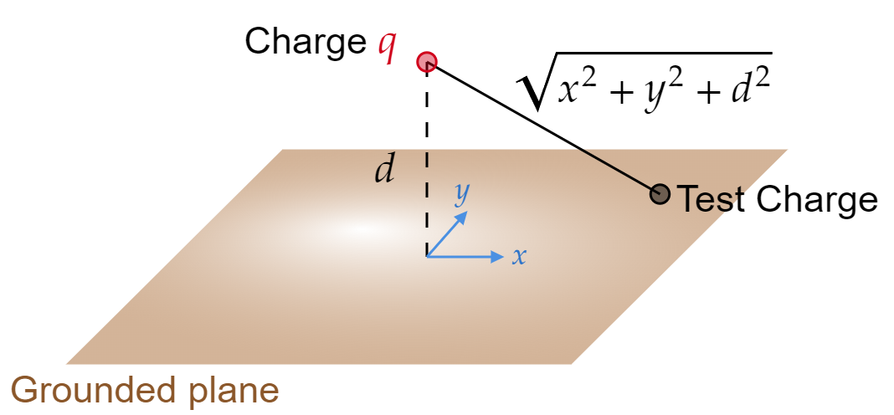

Useful context: In section 3.2.1: The Classic Image Problem, we studied the problem of an infinite grounded plane with a charge $q $ held a distance $d $ above. We found (using the method of images) that
\[V(x,y,z)=\frac{1}{4\pi \epsilon _0 }\bigg[ \frac{q}{\sqrt{x^2 +y^2 +(z-d)^2 }}-\frac{q}{\sqrt{x^2 +y^2 +(z+d)^2 }} \bigg] \tag{Eq. 3.9, page 124} \] A bit further down, in section 3.2.2: Induced Surface Charge, we recalled Equation 2.49: $\sigma =-\epsilon _0 \frac{\partial V}{\partial n} $. Using this and Eq. 3.9, we see that the induced charge on the conductor (the infinite grounded plane) is: \[\sigma (x,y)=\frac{-qd}{2\pi (x^2 +y^2 +d^2 )^{3/2}}\tag{Eq. 3.10, page 125} \]Here's an alternative derivation of Eq. 3.10
This approach (which generalizes to many other problems) does NOT rely on the method of images.
The total field is due in part to $q $, and in part to the induced surface charge. Write down the $z $ components of these fields - In terms of $q $ and the as-yet-unknown $\sigma (x,y) $ - just below the surface.
The sum must be zero, because this is inside a conductor. Use this argument to determine $\sigma $.
Let's follow the ideas above.
Firstly, the $z $ component of the electric field of $q $ at any point on the grounded field:
Using a factor of
\[\cos \left( \theta \right) =\frac{d}{\sqrt{x^2 +y^2 +d^2 }} \]Is given by
\begin{align*} E_z(x,y) &= |\mathbf{E}|\cos \left( \theta \right) \\ &= \frac{1}{4\pi \epsilon _0 }\frac{q}{x^2 +y^2 +z^2 }\frac{d}{\sqrt{x^2 +y^2 +d^2 }}\\ &= \frac{1}{4\pi \epsilon _0 }\frac{qd}{(x^2 +y^2 +z^2)^{3/2} } \end{align*}Further, the field close to the infinite-plane is (due to the plane itself) is (see Eq. 2.17, page 72):
\[E_z=\frac{\sigma }{2\epsilon _0 } \]The sum must be zero, so:
\[0= \frac{\sigma }{2\epsilon _0 }+\frac{1}{4\pi \epsilon _0 }\frac{qd}{(x^2 +y^2 +z^2)^{3/2} } \]Solve for $\sigma $:
\[\sigma (x,y)=\frac{-qd}{2\pi (x^2 +y^2 +d^2 )^{3/2}}\tag{The same as Eq. 3.10!} \]